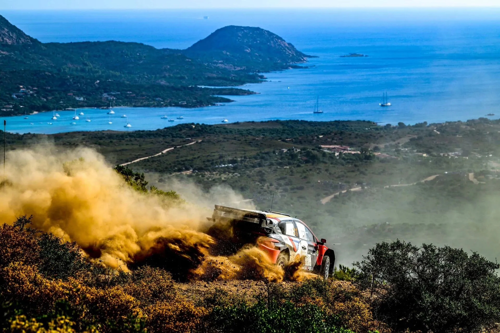

Rally Italia Sardegna 2026: The Stages
Thumbnail: @ World
Rally Italia Sardegna bows out of the WRC calendar after featuring as a round of the championship for twenty two seasons since 2004. The event returns to Alghero for this year, featuring familiar stages, with new configurations.
Following the cancellation of Rally Saudi Arabia, this will be the last round of the 2026 WRC season, and the last of the Rally1 regulations.
Thursday
Thursday is the opening day of the rally, and features a run of the pre-event Shakedown, which is new for this year, as well as a pass through the Ittiri Arena SSS, which has been featured in the event's itinerary in the past.
Shakedown: Monte Baranta - 3.27km
Changes compared to past editions: Uses sections of the old Olmedo Shakedown test which was last used in 2020, with a new finish.
Stage description: The stage kicks off in an open arena section, with many slow corners, hairpins as well as jumps. It then joins a proper road that is narrow and rough, climbing uphill with a series of hairpins. A high-speed section follows, heading downhill, with the test using a new road as the finish from 2.55km onwards.
Sebastien Ogier broke his suspension in the arena section in 2019.
SSS1: Ittiri Arena Show - 2.08km
Changes compared to past editions: Was last used as the Shakedown in 2024, this year it returns as a twin-car SSS for the first time since 2019.
Stage description: Ittiri last served as the pre-event shakedown two years ago, when it drew widespread criticism, as the stage was not representative of the rally itself, and its layout meant crews were at times driving back through their own dust.
Regardless, the test will be used as a twin-car SSS for this year for the first time since 2019, featuring long and twisty corners at the mixed surface rallycross track.
Friday
The first day of competitive action features three repeated stages, either side of a service in Alghero. All three stages had sections used in the 2025 edition, but none is in the same configuration.
SS2/5 Tula - Erula - 18.77km
Changes compared to past editions: Last year's stage, extended thanks to the addition of a twisty section near the start, and the use of a new finish.
Stage description: The start of the stage is on rough and twisty roads for the first five and a half kilometers, before continuing onto a road that is fast, featuring crests and jumps on a wind turbine farm.
The stage then continues onto a very rough set of roads connected together by junctions, that is mostly narrow and rocky, before joining a service road that is smooth and very fast at 9.4km. After another very narrow passage, the test joins a road running next to a fire-break, that is narrow, rough, and features big elevation changes. Adrien Fourmaux almost went off the road here in 2025.
It becomes slow and sinuous after that, on a road that heads downhill inside the forest.
SS3/6 Su Filigosu - Lerno - 17.83km
Changes compared to past editions: Essentially the last 10km of SS Lerno - Su Filigosu from last year only in reverse. The stage has been used many times in the past with different names, and configurations.
Stage description: The start is on a medium wide road that is initially technical, but later becomes high-speed. It continues to be high-speed following a hairpin at 1.6km, being mostly smooth and flowing. It becomes more technical and narrow at 6.26km, joining a high-speed tarmac section shortly after.
It joins a mostly smooth road after that, which is medium-wide and medium to high-speed for the most part, with the end of the stage being narrow and sinuous, and also significantly rougher.
SS4/7 Monti die Alà - Sa Conchedda - Lerno - 23.23km
Changes compared to past editions: A combination of sections used multiple times in Rally Sardegna. This stage shares a lot of sections with the 50km Monte Lerno - Sa Conchedda stage from 2023, only in reverse.
Stage description: The start of the stage is an open arena section, with long sweeping corners as well as a watersplash. It then continues onto a flat-out narrow section, before becoming wider, but more technical. After a quite twisty sequence of corners at 8.3km, the stage continues onto a high-speed section in a wind turbine farm, that is mostly medium-wide and flowing.
At 11.3km, there's a downhill section that is quite twisty and bumpy, with elevation changes. It then continues onto a smoother road that is flat-out for the most part, climbing uphill, before turning right onto a section of stage that hasn't been used since 2005!
The stage continues downhill, passing next to a lake at 19.6km, before joining a wider road. The end of the test is a steep downhill road never used before in Rally Sardegna.
Saturday
Just like Friday, Saturday features two loops of three repeated stages. Lerno - Monti di Alá features the iconic Micky's Jump, whereas Coiluna - Loelle has the well-known section inside the motocross track.
SS8/11: Lerno - Monti di Alá - 24.14km
Changes compared to past editions: The stage uses sections used in last year's Lerno - Su Filigosu and Sa Conchedda stages. The Sa Conchedda section is run in the opposite direction.
Stage description: The start is mostly narrow and twisty, with the iconic Micky's Jump just 600m into the stage. A downhill hairpin section follows, after which the stage becomes faster. Following a hairpin at 2.8km, the stage keeps changing between high-speed and technical sections, passing next to a lake at 5km.
The test then continues onto roads usually found in the Monti di Ala test, being mostly smoother and faster in sections. At around 11km in it passes through a wind turbine farm, being wider at some parts, with a slightly rougher passage at the end. It then continues down a narrow tarmac road for about 800m, before again turning onto gravel.
The rest of the stage is mostly high-speed roads inside the Monti di Ala area, with a few technical sections spread out between them.
SS9/12 Coiluna - Loelle - 24.83km
Changes compared to past editions: The stage with the same name from 2025 has been extended from the finish, featuring a sector which was last used in 2016.
Stage description: It kicks off with a high-speed section on a medium-wide road, with Coiluna's jump at 1km in. Following Crastazza's jump at 2.8km, the stage turns onto a narrower road in a more forested area, with a mix of slow and fast sections, changing character constantly.
At 8.5km, it turns onto a rough and narrow road, and though initially slow, it becomes high-speed, with two jumps at 9.75km. After an angular, fast section next to olive trees, the test continues onto an "arena" section inside a motocross track. It features slow, long corners, a jump and a watersplash.
The rest of the stage is quite high-speed, not too rough, but bumpy in sections, especially on the second pass.
SS10/13 Solorche - 12.86km
Changes compared to past editions: Brand new stage, never used before in any event.
Stage description: Solorche starts off on a rocky and rough uphill road. It is quite twisty and technical, going in and out of the forest. From about 3km onwards it remains deep in the forest, and starts heading downhill following a hairpin at 4.35km.
It becomes smooth after that, remaining medium speed to slow for the most part for the next six kilometers. At 10.2km, there's a small tarmac section, after which the stage joins a very narrow and rough road. This road leads onto a wide arena section, that does a small loop, featuring a jump, just before the finish.
Sunday
Sunday features two stages, repeated twice, with no service area in the middle. Both tests featured in the itinerary last time the event was in Alghero, and have little to no differences in terms of configurations for this year.
SS14/16 Osilo - Tergu - 23.71km
Changes compared to past editions: A slightly shortened version of the 2024 Osilo - Tergu stage.
Stage description: The start of the stage is narrow and twisty, with the surface of the road being loose, but generally smooth. It is downhill, until 4.5km in, where it has a short faster section, and starts climbing uphill. It quickly becomes twisty and narrow again.
The stage crosses through a tarmac road at 10.1km, and continues onwards with the same profile until 14.4km. There, it joins a very narrow road through a tight hairpin, which is rougher, also featuring a small watersplash at 14.8km. The road is twisty with many elevation changes, heading mostly downhill. The last 1.2km are on a new road, never used before in the rally.
SS15/17 Sassari - Argentiera - 7.10km
Changes compared to past editions: The classic beach-side Power Stage remains identical to previous editions.
Stage description: After starting on tarmac, the stage quickly turns onto gravel, with a very narrow, sandy and very rough section ensuing. It changes between twisty and fast, with a steep downhill section following after a hairpin at 5.46km.
The end of the stage is high-speed with a few crests, on a road running alongside the Sardinian coast, a perfect way for the rally to bow out of the calendar.


Comments